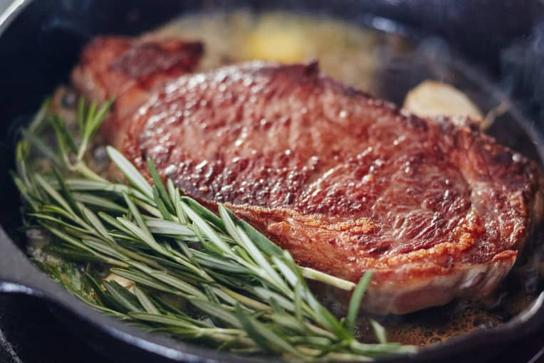

Steak

Stovetop Steak
What if I told you the very best stovetop steak of your life can be enjoyed in as little as 45 minutes, with only four extra ingredients and 15 minutes of hands-on cooking? It’s true! Busting conventional steak-cooking wisdom makes for better steak.When you really want a straight-forward, no-fuss steak with a crisp crust and juicy center, I can say without question that the most fail-proof way to cook it on the stovetop only requires three steps. Partnered with a few essential tips, this simple three-step method will give you a perfectly cooked stovetop steak with a tender buttery flavor, cooked just the way you like it, every time.
Ingredients
- 2 Ribeye or New York steaks
- 1 teaspoon kosher salt
- 3 tablespoons unsalted butter
- 2 cloves garlic
- 2 to 3 sprigs of fresh thyme or rosemary
Steps
- Prepare the steaks - Remove the steaks from the refrigerator about 30 minutes to 1 hour before cooking. Place them on a paper towel-lined plate and pat dry with more paper towels. This will help dry the surface of the meat, making a better crust.
- Prepare the rest of the ingredients - Because cooking the steaks will go quickly with almost no hands-off cooking time, make sure you have the rest of the ingredients handy, as well as a probe thermometer and a clean plate for resting the steaks.
- Season the steaks - Just before cooking, liberally coat the steaks with the salt, making sure to coat the sides of the steaks as well.
- Heat the pan - Heat a 12-inch cast iron skillet over high heat for about 10 minutes; the pan should smoke just a bit when it is properly heated.
- Cook the steaks - Carefully place the steaks in the hot pan and cook on the first side until enough of a crust has developed that the steaks no longer stick to the pan, about 1 minute. Flip and cook on the other side for 1 minute. Continue cooking and flipping for a total of 4 minutes.
- Flavor and baste the steaks - Carefully add the butter, garlic, and herbs to the pan. Flip the steaks once more. Tilt the pan so the butter pools on one side and use a large spoon to baste the butter over the steaks. Flip again and repeat. Begin checking the internal temperature of the steaks at 6 minutes total cook time for your preferred doneness. Medium rare is between 125°F and 130°F.
- Rest the steaks(optional) - Transfer the steaks to the plate to rest for 5 minutes. While the steaks rest, prepare a pan sauce if desired.
- Carve the steaks - Transfer the steaks to a cutting board and thinly slice across the grain. Serve immediately with the pan juices or pan sauce.